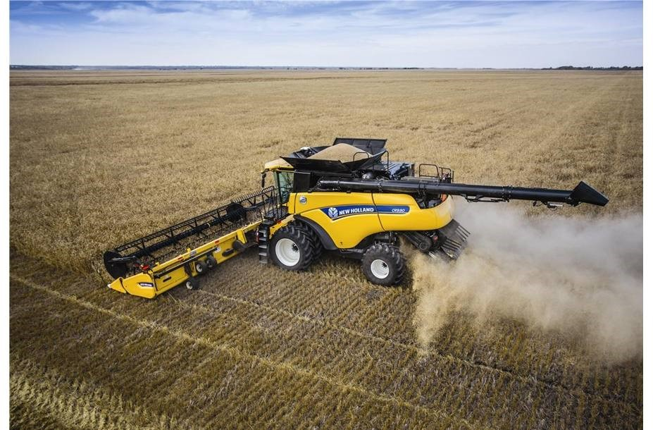

Image analysis to monitor the spreading processes on a combine harvester
Problem statement
For many years, combine harvesters (dutch: maaidorser) are used to harvest grain crops, wheat, barley, rye, corn, soybeans, peas …. The machine cuts the crop and separates the grain kernels from the plant. The residue (e.g. straw) is in large parts of the world chopped into small parts and spread over the field. This residue subsequently acts as fertilizer for the next crop cycle. It is of paramount importance that the residue is spread evenly in order for it to degrade properly and fertilize uniformly. To validate the quality of the spreading process on the machine, we are currently employing a labor-intensive process involving the weighing of straw from different sectors on the field.

Goal
The goal of this thesis is to automate the process of validating a uniform spreading of straw, by developing algorithms that analyze the spreading process based on images taken by drones. These images need to be stitched and ortho-referenced w.r.t. to the trajectory of the combine harvester. The volume and/or density of the straw has to be estimated from the orthomosaic, which is challenging e.g. due to non-even soil surface. The student has to optimize the drone flight parameters in function of e.g. ground sampling distance, optimal digital surface model (DSM) reconstruction, etc.
This thesis is in close collaboration with CNH Industrial designs. CNH designs, manufactures and sells combine harvesters from Zedelgem, Belgium.

This thesis is being conducted by Lowie Christiaen (Lowie.Christiaen@UGent.be).